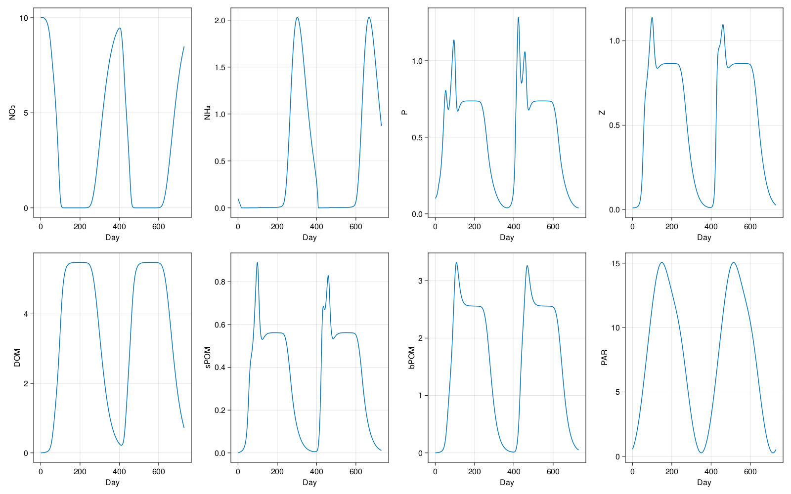

Box model
In this example we will setup a LOBSTER biogeochemical model in a single box configuration. This demonstrates:
- How to setup OceanBioME's biogeochemical models as a stand-alone box model
Install dependencies
First we will check we have the dependencies installed
using Pkg
pkg"add OceanBioME, CairoMakie, DiffEqBase, OrdinaryDiffEq"Model setup
Load the packages and setup the initial and forcing conditions
using OceanBioME
minute=minutes=60
hour=hours=60*minutes
day=days=hours*24 # define the length of a day in seconds
year=years=day*365 # define the length of a year in days31536000This is forced by a prescribed time-dependent photosynthetically available radiation (PAR)
PAR⁰(t) = 60*(1-cos((t+15days)*2π/(365days)))*(1 /(1 +0.2*exp(-((mod(t, 365days)-200days)/50days)^2))) .+ 2
z=-10# specify the nominal depth of the box for the PAR profile
PAR(t) = PAR⁰(t)*exp(z*0.2) # Modify the PAR based on the nominal depth and exponential decayPAR (generic function with 1 method)Set up the model. Here, first specify the biogeochemical model, followed by initial conditions and the start and end times
model = BoxModel(biogeochemistry = LOBSTER(grid = BoxModelGrid()), forcing = (; PAR))
model.Δt = 5minutes
model.stop_time = 2years
set!(model, NO₃ = 10.0, NH₄ = 0.1, P = 0.1, Z = 0.01)Run the model (should only take a few seconds)
@info "Running the model..."
run!(model, save_interval = 100, save = SaveBoxModel("box.jld2"))
@info "Plotting the results..."[ Info: Running the model...
[ Info: Reached 0 seconds
[ Info: Reached 3.472 days
[ Info: Reached 6.944 days
[ Info: Reached 10.417 days
[ Info: Reached 13.889 days
[ Info: Reached 17.361 days
[ Info: Reached 20.833 days
[ Info: Reached 24.306 days
[ Info: Reached 27.778 days
[ Info: Reached 31.250 days
[ Info: Reached 34.722 days
[ Info: Reached 38.194 days
[ Info: Reached 41.667 days
[ Info: Reached 45.139 days
[ Info: Reached 48.611 days
[ Info: Reached 52.083 days
[ Info: Reached 55.556 days
[ Info: Reached 59.028 days
[ Info: Reached 62.500 days
[ Info: Reached 65.972 days
[ Info: Reached 69.444 days
[ Info: Reached 72.917 days
[ Info: Reached 76.389 days
[ Info: Reached 79.861 days
[ Info: Reached 83.333 days
[ Info: Reached 86.806 days
[ Info: Reached 90.278 days
[ Info: Reached 93.750 days
[ Info: Reached 97.222 days
[ Info: Reached 100.694 days
[ Info: Reached 104.167 days
[ Info: Reached 107.639 days
[ Info: Reached 111.111 days
[ Info: Reached 114.583 days
[ Info: Reached 118.056 days
[ Info: Reached 121.528 days
[ Info: Reached 125 days
[ Info: Reached 128.472 days
[ Info: Reached 131.944 days
[ Info: Reached 135.417 days
[ Info: Reached 138.889 days
[ Info: Reached 142.361 days
[ Info: Reached 145.833 days
[ Info: Reached 149.306 days
[ Info: Reached 152.778 days
[ Info: Reached 156.250 days
[ Info: Reached 159.722 days
[ Info: Reached 163.194 days
[ Info: Reached 166.667 days
[ Info: Reached 170.139 days
[ Info: Reached 173.611 days
[ Info: Reached 177.083 days
[ Info: Reached 180.556 days
[ Info: Reached 184.028 days
[ Info: Reached 187.500 days
[ Info: Reached 190.972 days
[ Info: Reached 194.444 days
[ Info: Reached 197.917 days
[ Info: Reached 201.389 days
[ Info: Reached 204.861 days
[ Info: Reached 208.333 days
[ Info: Reached 211.806 days
[ Info: Reached 215.278 days
[ Info: Reached 218.750 days
[ Info: Reached 222.222 days
[ Info: Reached 225.694 days
[ Info: Reached 229.167 days
[ Info: Reached 232.639 days
[ Info: Reached 236.111 days
[ Info: Reached 239.583 days
[ Info: Reached 243.056 days
[ Info: Reached 246.528 days
[ Info: Reached 250 days
[ Info: Reached 253.472 days
[ Info: Reached 256.944 days
[ Info: Reached 260.417 days
[ Info: Reached 263.889 days
[ Info: Reached 267.361 days
[ Info: Reached 270.833 days
[ Info: Reached 274.306 days
[ Info: Reached 277.778 days
[ Info: Reached 281.250 days
[ Info: Reached 284.722 days
[ Info: Reached 288.194 days
[ Info: Reached 291.667 days
[ Info: Reached 295.139 days
[ Info: Reached 298.611 days
[ Info: Reached 302.083 days
[ Info: Reached 305.556 days
[ Info: Reached 309.028 days
[ Info: Reached 312.500 days
[ Info: Reached 315.972 days
[ Info: Reached 319.444 days
[ Info: Reached 322.917 days
[ Info: Reached 326.389 days
[ Info: Reached 329.861 days
[ Info: Reached 333.333 days
[ Info: Reached 336.806 days
[ Info: Reached 340.278 days
[ Info: Reached 343.750 days
[ Info: Reached 347.222 days
[ Info: Reached 350.694 days
[ Info: Reached 354.167 days
[ Info: Reached 357.639 days
[ Info: Reached 361.111 days
[ Info: Reached 364.583 days
[ Info: Reached 1.008 years
[ Info: Reached 1.018 years
[ Info: Reached 1.027 years
[ Info: Reached 1.037 years
[ Info: Reached 1.046 years
[ Info: Reached 1.056 years
[ Info: Reached 1.065 years
[ Info: Reached 1.075 years
[ Info: Reached 1.084 years
[ Info: Reached 1.094 years
[ Info: Reached 1.104 years
[ Info: Reached 1.113 years
[ Info: Reached 1.123 years
[ Info: Reached 1.132 years
[ Info: Reached 1.142 years
[ Info: Reached 1.151 years
[ Info: Reached 1.161 years
[ Info: Reached 1.170 years
[ Info: Reached 1.180 years
[ Info: Reached 1.189 years
[ Info: Reached 1.199 years
[ Info: Reached 1.208 years
[ Info: Reached 1.218 years
[ Info: Reached 1.227 years
[ Info: Reached 1.237 years
[ Info: Reached 1.246 years
[ Info: Reached 1.256 years
[ Info: Reached 1.265 years
[ Info: Reached 1.275 years
[ Info: Reached 1.284 years
[ Info: Reached 1.294 years
[ Info: Reached 1.303 years
[ Info: Reached 1.313 years
[ Info: Reached 1.322 years
[ Info: Reached 1.332 years
[ Info: Reached 1.341 years
[ Info: Reached 1.351 years
[ Info: Reached 1.360 years
[ Info: Reached 1.370 years
[ Info: Reached 1.379 years
[ Info: Reached 1.389 years
[ Info: Reached 1.398 years
[ Info: Reached 1.408 years
[ Info: Reached 1.417 years
[ Info: Reached 1.427 years
[ Info: Reached 1.436 years
[ Info: Reached 1.446 years
[ Info: Reached 1.455 years
[ Info: Reached 1.465 years
[ Info: Reached 1.475 years
[ Info: Reached 1.484 years
[ Info: Reached 1.494 years
[ Info: Reached 1.503 years
[ Info: Reached 1.513 years
[ Info: Reached 1.522 years
[ Info: Reached 1.532 years
[ Info: Reached 1.541 years
[ Info: Reached 1.551 years
[ Info: Reached 1.560 years
[ Info: Reached 1.570 years
[ Info: Reached 1.579 years
[ Info: Reached 1.589 years
[ Info: Reached 1.598 years
[ Info: Reached 1.608 years
[ Info: Reached 1.617 years
[ Info: Reached 1.627 years
[ Info: Reached 1.636 years
[ Info: Reached 1.646 years
[ Info: Reached 1.655 years
[ Info: Reached 1.665 years
[ Info: Reached 1.674 years
[ Info: Reached 1.684 years
[ Info: Reached 1.693 years
[ Info: Reached 1.703 years
[ Info: Reached 1.712 years
[ Info: Reached 1.722 years
[ Info: Reached 1.731 years
[ Info: Reached 1.741 years
[ Info: Reached 1.750 years
[ Info: Reached 1.760 years
[ Info: Reached 1.769 years
[ Info: Reached 1.779 years
[ Info: Reached 1.788 years
[ Info: Reached 1.798 years
[ Info: Reached 1.807 years
[ Info: Reached 1.817 years
[ Info: Reached 1.826 years
[ Info: Reached 1.836 years
[ Info: Reached 1.846 years
[ Info: Reached 1.855 years
[ Info: Reached 1.865 years
[ Info: Reached 1.874 years
[ Info: Reached 1.884 years
[ Info: Reached 1.893 years
[ Info: Reached 1.903 years
[ Info: Reached 1.912 years
[ Info: Reached 1.922 years
[ Info: Reached 1.931 years
[ Info: Reached 1.941 years
[ Info: Reached 1.950 years
[ Info: Reached 1.960 years
[ Info: Reached 1.969 years
[ Info: Reached 1.979 years
[ Info: Reached 1.988 years
[ Info: Reached 1.998 years
[ Info: Plotting the results...
Plot the results
using JLD2, CairoMakie
vars = (:NO₃, :NH₄, :P, :Z, :DOM, :sPOM, :bPOM, :PAR)
file = jldopen("box.jld2")
times = keys(file["values"])
timeseries = NamedTuple{vars}(ntuple(t -> zeros(length(times)), length(vars)))
for (idx, time) in enumerate(times)
values = file["values/$time"]
for tracer in vars
getproperty(timeseries, tracer)[idx] = values[tracer]
end
end
close(file)
fig = Figure(resolution = (1600, 1000))
plt_times = parse.(Float64, times)./day
axs = []
for (idx, tracer) in enumerate(vars)
push!(axs, Axis(fig[floor(Int, (idx - 1)/4) + 1, (idx - 1) % 4 + 1], ylabel="$tracer", xlabel="Day"))
lines!(axs[end], plt_times, timeseries[tracer])
end
save("box.png", fig)CairoMakie.Screen{IMAGE}

This page was generated using Literate.jl.